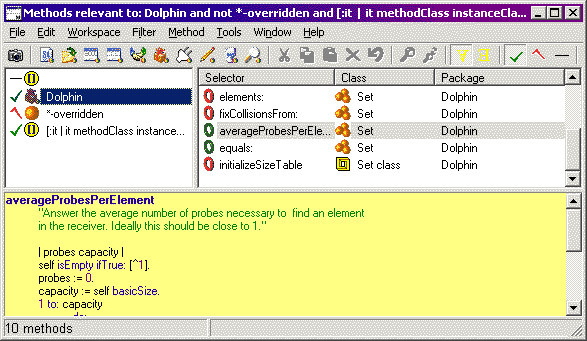
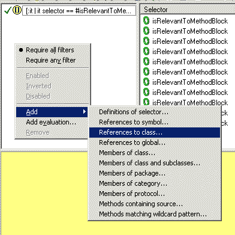
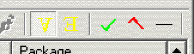

|
F.M.B. for Dolphin Smalltalk |
||||||||||||||||||
|
F.M.B. |
FMB (the Filtering Method Browser) is a simple hack to provide a more flexible kind of method browser. In essence, it just shows a list of all the methods in the system, reduced by applying one or more “filters” to select methods. Since the list of filters can be changed interactively, it provides a way of browsing for methods using more sophisticated selection criteria than is easy to do with the standard browsing tools. The FMB is a normal method browser enhanced with a filter panel. This panel holds a list of filter objects that determine which of the methods are be displayed. A picture will probably help show what I mean, so here is one:  In this case, the filters are set to show all the methods on Set that are in the Dolphin package, but not in the virtual method category “*-overriden” (that category is one of my extensions, you won't find it in the standard image, but it is a category of all methods that are overriden in some subclass). The effect is to show that there are only 10 methods on Set that are not overriden. By the way, I've scrunched everthing up in that example to make the picture smaller – I normally use a much bigger window for the FMB. FiltersThe concept of the filters is actually slightly blurry – what the filter panel holds is actually just a list of Objects and it's up to each object to decide what methods are “relevant” to it. You can add to the list of filters by using drag and drop from any of the system browsers that support it. You can also add objects to the list by using the filters menu – you can add an arbitrary object by evaluating an expression, or there's a handfull of prepackaged options that you can use. I trust the menu is self-explanatory enough… 
Objects indicate how they are relevant to methods by implementing the
Filter Modes and “All” and “Any” ModesThe FMB uses modes (I'm afraid – I couldn't think of a way of providing the power I needed without making the UI slightly modal). The modes are controlled from the filter menu, or from the toolbar: Each filter can be in one of three states: normal, inverted, or disabled (indicated by a green tick, an inverted red tick, or a dash, respectively). Inverting a filter changes its sense, so that instead of selecting methods that are relevant to the object, it selects methods that are not relevant. Disabling a filter just turns it off temporarily without removing it from the list. There is also a global mode, the FMB operates either in “All” mode or in “Any” mode. In All mode, the FMB displays the methods that pass all of the filters; in Any mode, it displays the methods that pass at least one of the filters. (The icons, by the way, are taken from the standard logic symbols; logicians use an upside-down A, “∀”, to mean that all objects have some propery, and a backwards E, “∃”, to mean that at least one object has the property.) Using itShould be straightforward. I hope. It installs itself as an “extra tool” in the Dolphin system folder. You can start it from there or from the Tools⇒Additional tools menu of any Dolphin window. When it comes up, it is in “All” mode, and there are no filters, so (since every method in the system passes all of the filters) it shows a list of all the methods there are. You can add filters to the list by drag-and-drop, or by using the filter menu. Filters are initially disabled (for perfomance reasons; I may make this configurable one day). You can enable them using the filter menu, or the toolbar, or they cycle through their three states if you double-click on them. A word about performance. Since the FMB is displaying a list filtered down from all the methods in the system, there is obviously going to be scope for it to be slow. On my machine (a 650Mz P3) with some 37000 methods in the system, changing simple filters takes less than a second, which I find reasonably acceptable. It may not be OK at all on slower machines (or for people with less patience than me). Some filters are (as I mentioned earlier) quite slow, so I advise putting them low on the list of filters, so that faster filters will have reduced the number of methods they have to process. The tool's a bit clunky in places, I admit, but I find it useful. Please let me know if you have any suggestions or problems. Packages
|
Copyright © Chris Uppal, 2003-2005